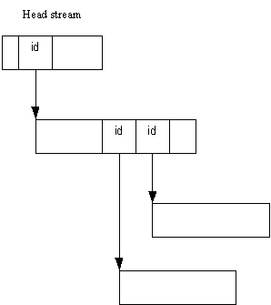

|
| |
When a store stream is created, a stream ID is generated. This ID can be used to open the stream later. Stream IDs can be externalised into another stream, and this allows streams in a store to be built into a network.
An object that is saved to a store may use a network of streams, typically starting with a single head stream.
An object stores itself using a function of the form:
streamId=object.StoreL(store);
Given the correct stream ID, the object may be restored using a function of the form:
object.RestoreL(store,streamId)
where store is a reference or pointer to a store.
The function names StoreL() and RestoreL()
are conventional for this purpose.
The following diagram shows the idea of stream networks:

Copyright ©2002 Symbian Ltd. 6.1-00174 |
|